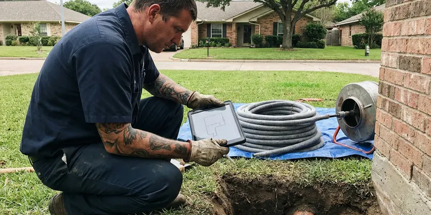

Gas Leak Repair in Wylie, TX
If you smell gas or suspect a leak in your Wylie, TX home, call DFJ Plumbing immediately. We provide fast, reliable gas leak repair to ensure your family's safety.
- Fast Emergency Response
- Licensed Gas Specialists
- Safety First Approach
- Transparent Pricing

Urgent Gas Leak Repair Services in Wylie, TX.
Don't delay, a gas leak requires prompt attention. Call us today for expert service.
Reliable Gas Leak Repair Services for Wylie, TX Homes
DFJ Plumbing specializes in safe and effective gas leak repair throughout Wylie, TX. Gas leaks are serious and require immediate professional attention to protect your property and loved ones.
Our expertise includes:
- Precise gas leak detection using advanced tools
- Expert repair of all types of gas lines and fittings
- Strict adherence to Texas plumbing and gas codes

Additional Plumbing Repair Services in Wylie, TX
We offer expert plumbing repair services across Wylie, TX to stop leaks, clear blockages, and keep every fixture working the way it should.


Customers
Why Choose DFJ Plumbing for Gas Leak Repair in Wylie, TX?
Texas homes, especially older properties or those with shifting foundations, can develop gas line issues. Our specialized service ensures your gas system is secure and up to code.
- Safety First, We prioritize the safety of your family and property above all else during gas leak repairs.
- Local Experts, Our technicians are highly trained and familiar with specific gas line challenges in Wylie, TX.
- Code Compliant, All repairs meet or exceed local Wylie and state Texas plumbing and gas safety regulations.
Citywide Coverage
DFJ Plumbing proudly serves every neighborhood of Wylie for gas leak repair, from downtown to the farthest suburbs. No matter where you are in Wylie, our team is ready to respond quickly.
Experienced Team
When it comes to gas leak repair, experience matters. The DFJ Plumbing team comprises licensed and insured plumbers with years of specific expertise in gas line systems common in Wylie, TX.
Safety-First Approach
We use specialized detection equipment to pinpoint leaks accurately and perform repairs that comply with the highest safety standards. Your peace of mind is our utmost priority for gas leak repair in Wylie, TX.
Trusted Certified Wylie Plumbing Services Professionals
At DFJ Plumbing, we take pride in providing certified plumbing services throughout Wylie, TX. Backed by recognized industry credentials, our experienced plumbers combine technical skill with genuine customer care. Whether it is repair, installation, or maintenance, we follow strict safety and quality standards to deliver lasting results you can trust.
Call Us Now PHCC Plumbing Contractor Recognition
PHCC Plumbing Contractor Recognition Better Business Bureau (BBB) Accreditation
Better Business Bureau (BBB) Accreditation Angi Certified Pro
Angi Certified Pro ISO 9001 Quality Management Certification
ISO 9001 Quality Management CertificationReliable Gas Leak Repair Services in Wylie, TX
Residential Gas Line Leak Detection in Wylie
Detecting a gas leak in your home requires precision and specialized tools. Our technicians use advanced gas sniffers and pressure testing equipment to accurately locate leaks in buried lines, appliance connections, or internal piping. This diagnostic step is crucial before any repair work begins, ensuring we address the exact source of the problem without unnecessary disruption to your Wylie property. We are thorough and methodical, prioritizing your family's safety.

Emergency Gas Leak Repair in Wylie, TX
A gas leak is an emergency that demands immediate attention. DFJ Plumbing offers 24/7 emergency gas leak repair services across Wylie, TX. If you smell gas, hear a hissing sound near a gas line, or your carbon monoxide detector activates, evacuate immediately and call us. Our rapid response team is equipped to handle urgent situations, safely isolating the leak and performing necessary repairs to restore safety to your home.
Underground Gas Line Repair in Wylie
Many Texas homes have underground gas lines running from the meter to the house or outdoor appliances. These lines can be susceptible to leaks due to shifting soil, root intrusion, or corrosion. Our underground gas line repair process involves careful excavation, precise leak location, and durable pipe replacement using approved materials like polyethylene (PE) or coated steel. We ensure all repairs comply with Wylie trenching and backfilling codes.
Appliance Gas Line Repair in Wylie, TX
Gas leaks can occur at connections to appliances like water heaters, furnaces, stoves, or clothes dryers. These often involve worn flex lines, loose fittings, or faulty shut-off valves. Our technicians are skilled in identifying and repairing leaks at these critical points. We can replace old or damaged appliance connectors, tighten fittings, and ensure all gas appliances in your Wylie, TX home are safely and securely connected to the gas supply.
Commercial Gas Leak Services in Wylie
Businesses in Wylie also rely on safe gas systems for heating, cooking, and industrial processes. DFJ Plumbing provides comprehensive gas leak detection and repair for commercial properties, understanding the unique complexities of larger gas systems and the need to minimize business interruption. We work quickly and efficiently to resolve commercial gas leaks, ensuring your business operations can resume safely and without delay, adhering to all commercial codes.
Gas Meter to House Line Repair in Wylie, TX
The gas line running from your utility's meter to your home's main shut-off valve is a common area for leaks. This line can be exposed to environmental factors that accelerate wear. DFJ Plumbing specializes in repairing or replacing these critical segments. We ensure proper pressure testing and adherence to all local Wylie, TX regulations for gas line integrity, providing a secure connection for your home's gas supply.
Permit and Inspection Coordination in Wylie
Gas line repairs often require permits and inspections from local Wylie authorities to ensure safety and code compliance. DFJ Plumbing handles all the necessary paperwork and coordination with city inspectors. We ensure that every gas leak repair project, especially those involving significant line replacement or new installations, meets all local building codes and passes required inspections, giving you full confidence in the quality and legality of our work.

Gas Line Replacement and Upgrades in Wylie, TX
Sometimes, a repair isn't enough, and a section or entire gas line needs replacement due to age, extensive corrosion, or improper installation. DFJ Plumbing provides full gas line replacement services, upgrading old or compromised lines with durable, modern materials that meet current safety standards. We can also upgrade line sizes if you're adding new gas appliances, ensuring your Wylie, TX home has adequate and safe gas flow.
Gas Leak Repair Near Me in Wylie, TX
When you search for 'gas leak repair near me' in Wylie, TX, you want a trusted, local expert who can respond quickly. DFJ Plumbing is your community's reliable choice, with technicians strategically located to provide fast service across the entire area. We understand the specific plumbing and gas infrastructure of Wylie.
Our commitment to the Wylie, TX community means we're always ready to help with urgent gas leak issues. You can count on DFJ Plumbing for prompt, professional, and safe gas leak repair, ensuring your home or business is secure without delay.
DFJ Plumbing at a Glance
- Fully licensed plumbing team covering Wylie, TX
- Same-day appointments and 24/7 emergency response
- Clear written estimates, no hidden fees
- 4.9-star rated by 812+ Texas customers
Wylie Map
Wylie Information
- Population
- 61,078
- Area codes
- 469/972/214
- Service area
- Wylie and communities within 40 miles
- Nearby
- Rowlett, Rockwall, Allen, Garland
Given the expansive and often shifting clay soils common in Texas, gas lines in Wylie homes can be particularly vulnerable to stress and leaks, making professional inspection and repair crucial for safety.
Expert Services
Trust our professionals for reliable DFJ Plumbing solutions in Wylie, TX.
Our Specialized Plumbing Services in Wylie, TX
At DFJ Plumbing, we provide a complete range of plumbing services across Wylie, TX. From leak detection to full system installations, our team ensures fast, precise, and affordable service for both residential and commercial properties. Explore our core services below:


How Our Gas Leak Repair Process Works in Wylie, TX
At DFJ Plumbing, our gas leak repair process is designed for maximum safety and efficiency, from the moment you call until the repair is complete and tested.
Request a Quote
Call (737) 405-5978 immediately if you suspect a gas leak. Our dispatch team will gather essential information and schedule a rapid response for your Wylie location.
Emergency Response
Our certified technicians arrive promptly, equipped with safety gear and specialized detection tools. We prioritize isolating the leak and ensuring the area is safe.
Precise Leak Detection
Using advanced gas sniffers and pressure tests, we accurately pinpoint the source of the gas leak. This ensures targeted and effective repair without guesswork.
Frequently Asked Questions About Gas Leak Repair in Wylie
The cost of gas leak repair in Wylie, TX can vary significantly depending on the leak's location, severity, and the type of pipe involved. Minor repairs like tightening a fitting might be $150-$300, while more complex jobs involving excavation or pipe replacement could range from $500 to over $2000. We provide a clear, upfront estimate after diagnosis.
The most common sign is the distinctive rotten egg smell, which is added to natural gas for safety. Other signs include a hissing sound near a gas line, dead or discolored vegetation over an underground line, unexplained higher gas bills, or physical symptoms like dizziness or nausea. If you notice any of these, call us immediately.
If your carbon monoxide detector alarms, immediately move everyone outdoors to fresh air. Carbon monoxide is odorless and colorless. Call 911 for emergency services and then contact DFJ Plumbing to inspect your gas appliances and lines for potential leaks, as CO is often a byproduct of incomplete combustion.
No, you should never attempt to fix a gas leak yourself. Gas line repairs require specialized training, tools, and strict adherence to safety codes. Improper repairs can be extremely dangerous and lead to severe consequences. Always call a licensed professional like DFJ Plumbing.
Yes, DFJ Plumbing stands behind our work. We offer a comprehensive warranty on all gas leak repairs, covering both parts and labor. We believe in providing lasting solutions and peace of mind to our Wylie, TX customers.
Yes, significant gas line repairs or replacements in Wylie, TX typically require a permit from the local building department. This ensures the work meets safety standards and is inspected by city officials. DFJ Plumbing handles all necessary permitting and inspections for you.
We repair all types of gas lines found in Texas homes and businesses, including black iron pipe, galvanized steel, copper, and modern corrugated stainless steel tubing (CSST). Our technicians are experienced with various piping materials and connection methods.
The duration of a gas leak repair varies greatly. Simple repairs might take an hour or two, while complex issues involving excavation or extensive pipe replacement could take a full day or more. We aim for efficient service while prioritizing safety and thoroughness.
What People Are Saying About Our Plumbing Experts?

Mark T.
When our office needed drain cleaning, DFJ Plumbing provided quick, reliable service. The plumber arrived on time and made sure every drain flowed perfectly before leaving. Very satisfied.
Drain Cleaning · Richardson, TX
Emily R.
I called DFJ Plumbing for plumbing repair, and the technician was fast, polite, and thorough. They explained the problem clearly and fixed it the same day. I will definitely hire them again. Highly recommended!
Plumbing Repair · Plano, TX
James P.
Our commercial plumbing system had a leak under the sink, and DFJ Plumbing handled it professionally. The plumbers arrived quickly and restored everything without disruption to our customers.
Commercial Plumbing · Wylie, TX
Sofia M.
Two new toilets installed in one visit, no mess left behind, and the tech even adjusted a faucet he noticed was dripping. Fair pricing and really friendly.
Toilet Installation · Richardson, TXLaura S.
I scheduled a water heater replacement, and the team made the process smooth and affordable. The new unit works perfectly, and they cleaned up after completing the job.
Water Heater Replacement · Rockwall, TX
Daniel K.
A pipe burst at 11 pm and they actually answered. The plumber showed up within the hour, shut everything down, and had us back to normal the next morning. Could not ask for more.
Emergency Plumbing · Rockwall, TX